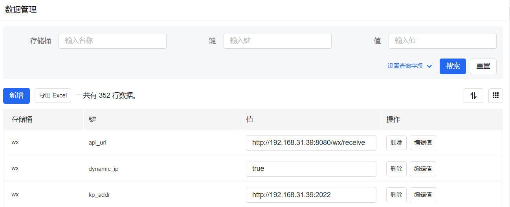

数据管理
后台地址：http://autMan的IP或域名:autMan的端口/fanli/static
登录账户设置指令：set autMan adminUsername xxxxxx
登录密码设置指令：set autMan adminPassword xxxxxx
系统设置目录->数据管理->选择存储桶
数据备份
指令：导出数据
导出的数据位于backup文件夹下，sets.conf文本文件，将此文件放置在autMan文件夹下，重启autMan会将sets.conf中的数据导入到autMan数据库，同时autMan会删除autMan文件夹下的sets.conf
配置修改
当autMan因某个配置参数错误导致不能启动时，可在autMan文件夹下新建文本文件，内容为set bucket key value格式，修改文件名为sets.conf，然后重启autMan，相关配置会被导入到autMan中